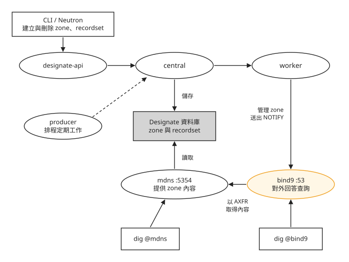
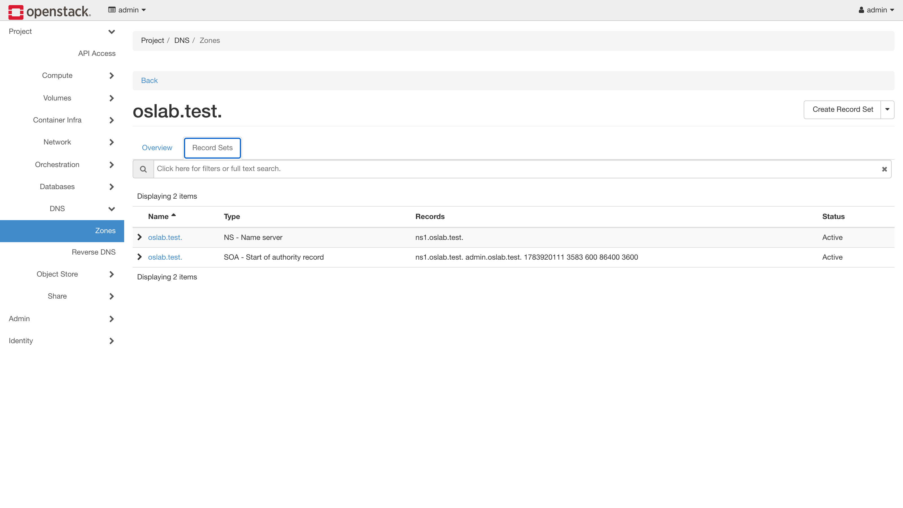
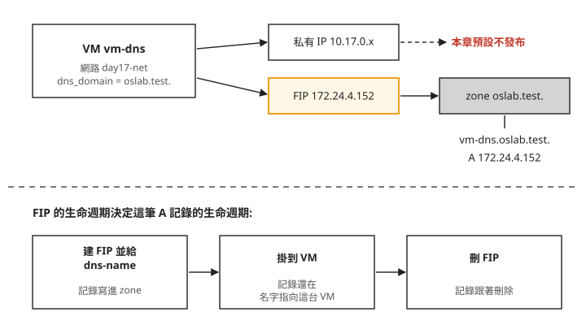

Day 17: Designate DNS——zone、recordset 與 floating IP 的自動發布¶

到 Day 16 為止,要連到雲裡的 VM,用的都是 IP。假設你開了一台 VM,掛上 floating IP(FIP)172.24.4.152,用這個位址存取它。過幾天 FIP 刪掉重建,位址換了,原來的 IP 就失效。可以在 DNS 裡維護一個名字,例如 vm-dns.oslab.test,而且讓這個名字跟著 FIP 走:FIP 建立時名字指向它,FIP 刪除時名字一起移除,不需要有人去改 DNS。
這一章用指定 DNS 伺服器的查詢來驗證名稱,不設定公司 resolver 或公開網域委派。我們部署 OpenStack 的 DNS 服務 Designate(對應 AWS 的 Route 53),再讓 Neutron 在 FIP 建立和刪除時自動通知它。讀完之後,遇到「VM 開了、網路也設了網域,卻查不到 DNS 記錄」時,你能判斷這是 Neutron 的預設行為、設定寫錯,還是問錯了 DNS 伺服器。
先看要維護的資料:vm-dns.oslab.test. 這個名字,對應一個 IPv4 位址,就是一筆 A 記錄。同一個名字、同一種類型的記錄放成一組,叫 recordset;oslab.test. 及其下未另行委派的名稱,構成一個管理範圍,叫 zone。稍後先建 zone,Neutron 才能把 FIP 的 A 記錄放進去。
Designate 由哪些部分組成¶
先講 DNS 本身。每個網域的名字,最後都由某一台 DNS 伺服器負責回答「這個名字對應到哪個 IP」,這台伺服器叫這個網域的權威伺服器(authoritative server)。這門課用的權威伺服器是 bind9,一套很常見的開源 DNS 伺服器軟體。
一般用戶端的 DNS 查詢由 bind9 回答。Designate 另有供後端使用的 mdns,稍後會用它比較資料是否已同步。它提供 API 讓人和其他 OpenStack 服務管理記錄,把記錄存進自己的資料庫,再交給 bind9 對外回答。部署完之後主機上會多出六個容器,下面這張圖畫出它們的分工,由上往下是一筆記錄從要求到能被查到的順序:

照著圖由上往下看:
- 要求只有一個入口。 不管是你用 CLI 建 zone,還是 Neutron 在 FIP 建立時要加記錄,都是呼叫 designate-api。
- central 管理的是 Designate 認定的內容。 它把 zone 和記錄寫進資料庫;worker 負責管理 bind9 上對應的 zone,並通知它有內容更新。producer 跑定期作業,不在一筆記錄的必經路上。
- bind9 的資料來自 designate-mdns。 mdns 是 Designate 內建的小型 DNS 伺服器,聽在 5354 port,bind9 收到更新通知後向它取得 zone 的內容;mdns 從 Designate 共用的資料庫讀取記錄,並不向 central 要資料。bind9 聽在標準的 53 port,真正對外回答查詢。步驟 5 會分別問這兩台,出問題時可以藉此判斷是哪一段斷了。
Neutron 那一側的整合由 Kolla 自動設定:開啟 Designate 之後,Kolla 會在 Neutron 的設定裡加上呼叫 Designate 的驅動程式和認證資訊,你只需要在步驟 1 提供兩個值。
步驟 1:在 globals.yml 開啟 Designate¶
DNS 裡的名字寫完整時,結尾會有一個點,例如 oslab.test.。這個點代表 DNS 階層的最上層(根),有寫點的名字是一個完整的名字;沒寫點的名字,在某些地方會被當成還要再接上其他後綴。等一下 neutron_dns_domain、zone 名稱與 FIP 的 --dns-domain 都要保留結尾的點。
把下面四行附加到 globals.yml:
sudo tee -a /etc/kolla/globals.yml << 'EOF'
enable_designate: "yes"
designate_ns_record:
- "ns1.oslab.test"
neutron_dns_domain: "oslab.test."
EOF
designate_ns_record:每個 zone 都要宣告由哪台 DNS 伺服器負責,這裡填的名字會寫進 zone 的 NS 記錄(步驟 3 會在 Horizon 看到它)。它是一個 list,Kolla 的預設值也是 list 格式,不要寫成單一字串。neutron_dns_domain:Neutron 預設使用的網域。Kolla 官方文件要求這個值必須以.結尾,而且不能是預設的openstacklocal。少了結尾的點,部署照樣成功,但 Neutron 不會替 FIP 建立任何 DNS 記錄,也不會報錯,症狀見疑難排解：FIP 一直沒有產生 A 記錄。
步驟 2:確認 port 53 沒被佔用,再部署¶
bind9 要佔用主機的 53 port。Ubuntu 內建的 systemd-resolved 也是 DNS 服務,但它只聽在 127.0.0.53 這類本機位址,跟 bind9 不衝突。部署前還是先看一眼:
部署時要帶三個 tag:designate 部署 Designate 本身,neutron 和 nova 則把 DNS 整合的設定寫進這兩個服務。只帶 designate,Designate 會裝好,但 Neutron 不會去呼叫它。
failed=0 之後,可以用 docker ps 確認上一節圖裡的六個容器都在:designate_api、designate_central、designate_worker、designate_producer、designate_mdns 和 designate_backend_bind9(也就是 bind9),狀態都應該是 healthy。
步驟 3:建立 zone¶
zone 是一個網域和它底下所有名字的管理範圍。建立 oslab.test. 這個 zone,就是告訴 Designate:oslab.test. 和 xxx.oslab.test. 這些名字由你負責。Neutron 只會把記錄寫進已經存在的 zone,所以 zone 要在開 VM 之前建好。
zone 相關的指令來自 Designate 的 CLI 外掛,跟 Day 1 裝 python-openstackclient 一樣要另外裝。--email 是這個 zone 的管理員信箱,會寫進 zone 的基本資料:
pip install python-designateclient
source /etc/kolla/admin-openrc.sh
openstack zone create --email admin@oslab.test oslab.test.
openstack zone show oslab.test. -f value -c status # PENDING → 約 10 秒 → ACTIVE
PENDING 表示 worker 還在 bind9 上建立 zone,變成 ACTIVE 表示後端更新狀態已完成;實際能否從用戶端查到,仍要由步驟 5 的 dig 確認。
zone 建好之後,網頁主控台也看得到。這一章使用 Horizon 的 designate-dashboard(專案 → DNS → Zones),點進 oslab.test. 的「Record Sets」:

畫面上的每一列是一個 recordset:同一個名字、同一種類型的記錄。新的 zone 會自動帶兩筆:
- NS:這個 zone 由哪台 DNS 伺服器負責,值就是步驟 1 填的
ns1.oslab.test。 - SOA:zone 的基本資料,包括剛才填的管理員信箱。
我們要的是第三種類型 A 記錄:把一個名字對應到一個 IPv4 位址。這一筆不用手動加,下一步建立帶有 DNS 名稱與網域的 FIP 時,就會自動出現在這個列表裡。
步驟 4:開一台 VM,用 FIP 帶出網域名稱¶
Neutron 的網路可以設定 dns_domain 屬性:這個網路上的 port 要用哪個網域。建網路時用 --dns-domain 指定成剛才的 zone,再照 Day 2 的方式接上 router、開一台 VM:
openstack network create day17-net --dns-domain oslab.test.
openstack subnet create day17-sub --network day17-net --subnet-range 10.17.0.0/24 --dns-nameserver 8.8.8.8
openstack router create day17-r
openstack router set day17-r --external-gateway ext-net
openstack router add subnet day17-r day17-sub
openstack server create vm-dns --flavor m1.tiny --image cirros --network day17-net --wait
openstack recordset list oslab.test.
subnet 的 --dns-nameserver 8.8.8.8 跟 Designate 無關:它是 VM 透過 DHCP 拿到的 DNS 伺服器,VM 要解析外部網域名稱就靠它。少了它,問題要等到 VM 裡的程式需要連外才會出現,見疑難排解：VM 裡解析不了外部網域名稱。
最後一行 recordset list 的結果裡只有 NS 和 SOA,沒有 A 記錄。網路設了 dns_domain,VM 也開好了,為什麼沒有記錄?
原因是 Neutron 的發布規則。day17-net 是一般的租戶網路,VM 在上面拿到的是 10.17.0.x 的私有 IP。依照 Neutron 官方文件,port 的位址要直接寫進 DNS,所在的網路必須是管理員為此特別建立的網路(VXLAN 這類網路的 segmentation ID 要落在租戶網路的範圍之外),本章未啟用額外的固定 IP 發布選項,所以這個租戶網路不符合。其他 DNS 擴充可以按 subnet 或網路設定發布,不能把本章結果推成所有私有 IP 一律不能進 DNS。本章改用 FIP 驗證發布。下面這張圖把同一台 VM 的兩個位址並排比較:

圖上半部是本章設定下的發布結果:租戶網路的私有 IP 不進 DNS,具名 FIP 會進。下半部是接下來三個動作對記錄的影響。
建 FIP 時用 --dns-name 和 --dns-domain 直接替它取名。依官方文件,這兩個值要在建立時一起給、之後不能改,記錄在 FIP 建立時就寫進 zone。第一個指令會印出 FIP 的位址,把它填進第二個指令的 <上一步的FIP>:
openstack floating ip create ext-net --dns-name vm-dns --dns-domain oslab.test. -f value -c floating_ip_address
openstack server add floating ip vm-dns <上一步的FIP>
sleep 10
openstack recordset list oslab.test. -f value -c name -c type -c records | grep -v "SOA\|NS"
sleep 10 是留時間給 worker 把記錄同步到 bind9。過濾掉 NS 和 SOA 之後,剩下的就是新的 A 記錄:
名字是 --dns-name 加上 --dns-domain,位址是這個 FIP。你的 FIP 位址會不一樣。
步驟 5:用 dig 查詢,再確認記錄會跟著 FIP 刪除¶
記錄在 Designate 裡,不代表 DNS 伺服器已經能回答。要用 dig 實際查一次:它是命令列的 DNS 查詢工具,@ 後面指定要問哪台伺服器,-p 指定 port,+short 只印出答案。
bind9 和 mdns 都聽在主機的管理網卡上(Kolla 的 dns_interface 預設就是 network_interface,也就是 Day 1 設的 eth0)。下面的 10.0.0.4 請換成你的主機私有 IP(ip -4 addr show eth0 可查)。先問 bind9,再問 mdns:
兩個查詢都應該印出你的 FIP 位址。這只證明指定伺服器的回答正確;一般用戶端要用這個名字,還需要讓它的 resolver 能查到這個 zone。如果只有 mdns 答得出來,記錄已經在 Designate 裡,問題在 mdns 傳給 bind9 的那一段;兩個都答不出來,就回到步驟 4 用 recordset list 確認記錄有沒有建立。
最後確認記錄的生命週期:把 FIP 從 VM 拿下來並刪除,記錄應該自動消失。兩個 <FIP> 都換成你的 FIP 位址:
openstack server remove floating ip vm-dns <FIP> && openstack floating ip delete <FIP>
openstack recordset list oslab.test. -f value | grep vm-dns || echo "記錄已自動清除"
只有先確認 recordset list 查詢成功,印出「記錄已自動清除」才表示 grep 找不到 vm-dns;API 查詢失敗也會讓這個 pipeline 走到 echo,不能單看文字判定。從建立、解析到刪除,這筆記錄都沒有人手動處理過。
疑難排解¶
網路設了 dns_domain,VM 卻沒有 DNS 記錄¶
原因:依本章未啟用額外固定 IP 發布選項的配置,這個租戶網路上的 port 位址不會寫進 DNS,說明見步驟 4。
修法:依步驟 4 建立帶 --dns-name 與 --dns-domain 的 FIP,再掛到 VM。只掛上一個沒有 DNS 屬性的既有 FIP,不能視為相同流程。
Kolla 官方 Designate 指南的驗證範例裡,私有網路的 VM 也有 A 記錄,那是因為範例另外開了 designate-sink:它接收 Nova 和 Neutron 的事件通知來建立記錄,是另一條機制。Kolla 預設不開它(designate_enable_notifications_sink: "no"),這門課也沒有開,沒有驗證過那條路。
部署成功,但 FIP 一直沒有產生 A 記錄¶
症狀:kolla-ansible deploy 是 failed=0,zone 也是 ACTIVE,建了帶 --dns-name 的 FIP 之後,recordset list 還是只有 NS 和 SOA,也沒有任何錯誤訊息。
原因:neutron_dns_domain 少了結尾的點,或沒改掉預設的 openstacklocal,見步驟 1。
修法:改好 globals.yml,重跑步驟 2 的 deploy 指令。
VM 裡解析不了外部網域名稱¶
症狀:VM 裡要先解析網域名稱的動作(例如拉容器映像檔)失敗,用 IP 指定對象的連線卻不受影響。
原因:建 subnet 時沒有給 --dns-nameserver,VM 沒有可用的 DNS 伺服器。這跟 Designate 無關,Designate 只管 oslab.test. 這個 zone,不負責替 VM 解析外部名稱。
修法:步驟 4 建 subnet 時已經加了 --dns-nameserver 8.8.8.8。已經建好的 subnet 可以用 openstack subnet set <subnet> --dns-nameserver 8.8.8.8 補上,再重建受影響的 VM。Day 18 的資料庫實例就是因為這個原因建立失敗,症狀判讀見 Day 18 的「subnet 沒有 DNS」。
想一想¶
- 同事在
day17-net上又開了一台vm-b,沒有掛 FIP,問你為什麼dig查不到vm-b.oslab.test.。你會怎麼回答?要讓它查得到,他該做什麼? - 另一位同學照這章操作,deploy 和建 zone 都成功,掛上帶
--dns-name的 FIP 之後,recordset list還是只有 NS 和 SOA。他的globals.yml裡寫的是neutron_dns_domain: "oslab.test"。你會請他改什麼、重跑哪個指令? dig -p 5354 @<主機IP>查得到記錄,dig @<主機IP>查不到。照架構圖,問題比較可能出在哪一段?為什麼不必先懷疑 Neutron?
小結¶
Designate 把 DNS 變成一個有 API 的服務:central 將 zone 和記錄寫入資料庫,worker 通知 bind9 更新,bind9 向 mdns 取得內容,再由 bind9 在 53 port 對外回答。開啟它時要給 Kolla 兩個值,designate_ns_record 是 list,neutron_dns_domain 結尾要有點,部署時帶上 designate,neutron,nova 三個 tag,Neutron 就會在 FIP 建立時寫入 A 記錄、刪除時移除。之後遇到查不到名字的情況,先確認位址符合本章的發布條件,以及 FIP 建立時是否帶了 DNS 屬性,再看 recordset list 裡有沒有記錄,最後用 dig 分別問 mdns 和 bind9,判斷是哪一段沒有接上。
延伸閱讀¶
想再深入，可以從這幾份開始：
- Kolla-Ansible 的 Designate 指南 —— 本章設定的官方對照,包含
neutron_dns_domain的格式要求,以及本章沒有開的 designate-sink。 - Neutron 的 DNS 整合說明 —— Neutron 的 port、網路、FIP 上各有哪些 DNS 屬性,彼此怎麼搭配。
- Neutron 與外部 DNS 服務的整合 —— 哪些位址會寫進 Designate 的完整規則;步驟 4 的 FIP 用法和私有網路不發布的條件都在這一頁。
- Designate 官方文件 —— zone、recordset、pool 的完整概念與 API。
下一步¶
雲現在會替 FIP 自動維護網域名稱了。Day 18 部署資料庫服務 Trove,它的資料庫實例直接開在今天建的 day17-net 上。